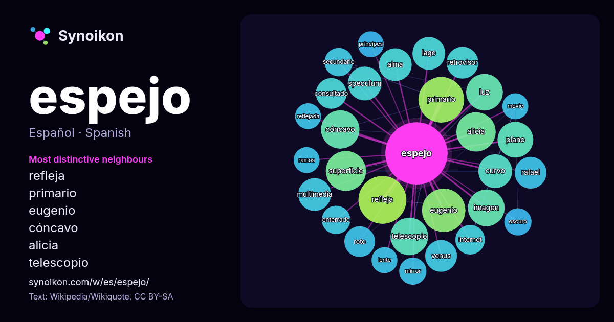

Español · lista de palabras del día
espejo
“mirror” · Las palabras encontradas a su alrededor en 1393 apariciones de Wikipedia, Wikiquote.

Vecinos más característicos
- refleja 32×
- primario 30×
- eugenio 27×
- cóncavo 23×
- alicia 22×
- telescopio 21×
- speculum 18×
- curvo 18×
- multimedia 16×
- retrovisor 16×
- venus 15×
- consultado 15×
- plano 15×
- roto 14×
- alma 14×
- imagen 13×
- superficie 13×
- luz 12×
- mirror 12×
- secundario 12×
× = cuántas veces más que en el texto general de Wikipedia.
Vecinos más frecuentes
- refleja 34
- primario 31
- eugenio 28
- película 24
- superficie 24
- alicia 23
- cóncavo 22
- mujer 22
- frente 21
- premio 21
- telescopio 21
- tipo 21
- imagen 20
- luz 20
- plano 19
- agua 17
- curvo 17
- datos 17
- mundo 17
- nombre 17
En contexto
- espejo (del lat. speculum) es una superficie pulida en la que, después de incidir, la luz se refleja siguiendo las leyes de la reflexión. Un espejo es Wikipedia snippets · Espejo
- Lo Espejo (también conocida como Espejo) es una estación de ferrocarriles construida al borde de la actual comuna de Lo Espejo. Fue concebida como un Wikipedia snippets · Estación Lo Espejo
- telescopios convencionales. Comparado a un espejo sólido de cristal que debe ser tallado, esmerilado y pulido, un espejo de metal líquido giratorio es mucho Wikipedia snippets · Espejo líquido
- Un espejo retrovisor lateral (o retrovisor lateral), también conocido como retrovisor exterior, es un espejo que se coloca en el exterior de los vehículos Wikipedia snippets · Espejo retrovisor lateral
- científico y prócer de la independencia, Eugenio Espejo, el Consejo estableció al Cantón con el nombre de Espejo. Extensión: 549,01 km² Altitud: de 2983 m s Wikipedia snippets · Cantón Espejo
- complejidad del poema, Alicia deja el libro y sale de la casa del espejo para entrar al mundo del espejo, en el que todo se hace al revés. Cuando Alicia sale de Wikipedia snippets · A través del espejo y lo que Alicia encontró allí
- implicaciones del estadio del espejo para la formación del yo. Esta etapa del desarrollo es descrita en su ensayo El estadio del espejo como formador de la función Wikipedia snippets · Estadio del espejo
- adecuadamente, por lo que se informa sobre un espejo (página) para obtenerlo. En el caso de las redes, «espejo» (o mirror) también hace referencia al modo Wikipedia snippets · Espejo (Internet)
Más palabras
- agua
- arte
- bosque
- caballo
- camino
- campana
- canción
- ciencia
- ciudad
- clima
- comida
- corazón
- desierto
- dinero
- dios
- estrella
- familia
- fuerza
- gato
- historia
- invierno
- isla
- jardín
- lengua
- lluvia
- madre
- mapa
- miel
- montaña
- muerte
- naturaleza
- oro
- otoño
- pan
- perro
- puente
- reloj
- sal
- salud
- silencio
- sombra
- tiempo
- tormenta
- trabajo
- tren
- té
- verano
- verdad
- vida
Precalculado el 2026-10-09 con los ajustes predeterminados (±5 palabras, corpus mediano). El mapa interactivo puede actualizarlo con datos en vivo.
Interfaz traducida automáticamente; se agradecen correcciones.